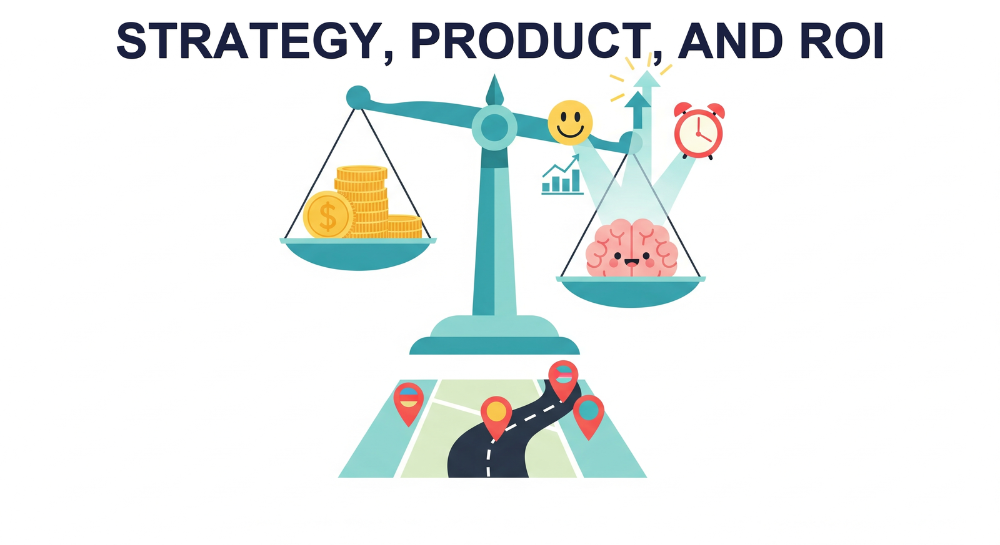

"Strategy without tactics is the slowest route to victory. Tactics without strategy is the noise before defeat."
Compass, Strategically Impatient AI Agent

Chapter 30 covered the regulatory and ethical floor. This chapter covers the strategic ceiling: how to decide what to build with LLMs, how to manage the product, how to measure ROI, how to evaluate vendors, how to plan compute, and how to think about LLM unit economics. The audience here shifts from engineers to engineering leaders, but engineers shipping LLM features benefit from reading their boss's playbook.
Chapter Overview
Technical excellence alone does not guarantee successful LLM adoption. Organizations that thrive with AI combine strong engineering foundations with disciplined strategy, clear product thinking, and rigorous return-on-investment measurement. Without these business-facing capabilities, even the most sophisticated models end up as expensive prototypes that never reach production.
This chapter bridges the gap between LLM engineering and business impact. It begins with strategic frameworks for identifying and prioritizing AI use cases, then covers the product management skills needed to translate business problems into LLM-powered solutions. The chapter provides concrete ROI measurement techniques for quantifying value, vendor evaluation frameworks for make-or-buy decisions, and infrastructure planning guidance for compute budgeting and deployment architecture. It also addresses total cost of ownership analysis for build-versus-buy decisions, enterprise integration patterns (identity, access control, multi-tenant isolation, audit logging), and the economics of LLM systems including token budgeting, cascade routing, and cost observability.
Whether you are an individual contributor building the business case for an LLM project, a tech lead evaluating vendors, or a product manager defining success metrics, this chapter equips you with the frameworks and vocabulary to connect technical decisions to organizational outcomes.
Technical capability alone does not guarantee business success. This chapter helps you build the business case for LLM adoption, estimate ROI, navigate build-versus-buy decisions, and align AI strategy with organizational goals. It provides the strategic lens needed to turn the technical skills from earlier chapters into real-world impact.
Learning Objectives
- Conduct AI readiness assessments and build structured use-case prioritization matrices
- Translate business problems into LLM product requirements with measurable success criteria
- Define and track LLM product metrics including CSAT, resolution rate, deflection rate, and hallucination rate
- Build ROI models for common LLM use cases (coding assistants, customer support, content generation)
- Evaluate LLM providers, vector databases, and agent frameworks using structured scoring rubrics
- Apply build-versus-buy decision trees that account for total cost of ownership over 12 to 36 months
- Plan compute budgets for training and inference workloads across GPU tiers (A100, H100, L40S)
- Design multi-cloud inference architectures with fallback routing and cost optimization
- Apply total cost of ownership models to build-versus-buy decisions, including vendor lock-in and open-weight trade-offs
- Integrate LLM systems into enterprise environments with SSO/OIDC, RBAC, multi-tenant isolation, and audit logging
- Optimize the economics of LLM systems through token budgeting, cascade routing, semantic caching, and cost observability
Prerequisites
- Chapter 11: LLM APIs (chat completions, model parameters, structured outputs)
- Chapter 19: Retrieval-Augmented Generation (embedding search, vector stores, RAG pipelines)
- Chapter 21: AI Agents (agent architectures, tool use, planning)
- Chapter 28: Evaluation and Observability (metrics, experiment design, monitoring)
- Chapter 29: Production Engineering and Operations (deployment, guardrails, LLMOps)
- Chapter 30: Safety, Ethics, and Regulation (security, compliance, governance)
Sections
- 31.1 LLM Strategy & Use Case Prioritization AI readiness assessment, use case identification, prioritization frameworks, business case building, common failure modes, and AI roadmap planning (6 to 18 months).
- 31.2 LLM Product Management Translating business problems to LLM requirements, success metrics (CSAT, resolution rate, deflection), hallucination risk management, UX design for LLMs, iterative delivery, and stakeholder communication.
- 31.3 ROI Measurement & Value Attribution ROI frameworks for LLM projects, coding assistant ROI, customer support ROI, productivity gains measurement, attribution challenges, and hands-on ROI model building.
- 31.4 LLM Vendor Evaluation & Build vs. Buy Provider evaluation (quality, pricing, SLAs, privacy), vector database selection, agent framework comparison, and build-versus-buy decision trees.
- 31.5 LLM Compute Planning & Infrastructure Compute budgeting, cloud strategy, GPU selection (A100, H100, L40S), self-hosted versus API breakeven analysis, inference infrastructure, and multi-cloud architecture.
- 31.6 Enterprise Integration Patterns for LLM Systems SSO/OIDC identity integration, RBAC for models and tools, multi-tenant data isolation, immutable audit logging, approval workflows, governance boundaries, and secrets management.
- 31.7 Economic Design of LLM Systems Token budgeting, cascade model routing, semantic caching, prompt cost optimization, evaluation cost management, build vs. buy economics, cost observability, and ROI frameworks.
What's Next?
In the next part, Part X: Frontiers, we look beyond today's state of the art to emerging architectures and AI's broader societal implications.